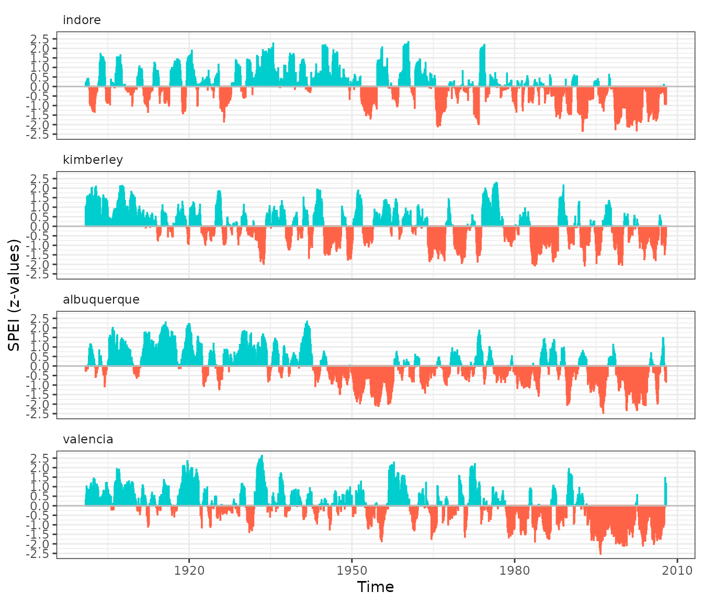

spei(), spi() and the PET functions process
many series at once. The data can be:
- a matrix, with one series per column, for several stations;
- a 3-d array with dimensions time × longitude × latitude, for gridded data.
Each series is fitted separately, with the same options, so the result is the same as computing each series in a loop, but simpler.
Several stations: matrices
The balance dataset holds the monthly climatic water
balance at 11 stations around the world, from January 1900. It is a data
frame; we convert it to a monthly time series matrix:
data(balance)
bal <- ts(as.matrix(balance), start = c(1900, 1), frequency = 12)
dim(bal)
#> [1] 1296 11
colnames(bal)
#> [1] "indore" "kimberley" "albuquerque" "valencia" "viena"
#> [6] "abashiri" "tampa" "sao_paulo" "lahore" "punta_arenas"
#> [11] "helsinki"A single call computes the SPEI for all the stations:
The result is a time series matrix with the same columns. The plot method shows one panel per station, for up to ten stations; here, the first four:

The coefficients array has one set of parameters per station and calendar month (parameter × station × month):
dim(spei12$coefficients)
#> [1] 3 11 12The reference period and the other options of
vignette("options") work in the same way. With
na.rm = TRUE, each station can have its own gaps.
PET for several stations
The PET functions also take matrices, with one latitude per column:
data(wichita)
tmed <- ts(cbind(site1 = wichita$TMED, site2 = wichita$TMED + 2),
start = c(1980, 1), frequency = 12
)
pet <- thornthwaite(tmed, lat = c(37.6, 40.1), verbose = FALSE)
head(pet)
#> site1 site2
#> Jan 1980 0.00000 0.7777378
#> Feb 1980 0.00000 0.0000000
#> Mar 1980 10.87737 13.7139712
#> Apr 1980 44.32115 49.6337730
#> May 1980 84.88239 95.5090424
#> Jun 1980 164.90094 190.6178702Gridded data: 3-d arrays
The cruts4 dataset is a small grid of 2 × 3 cells in the
central Pyrenees (Spain and France), with the monthly water balance from
CRU TS 4.05 for 1900–2019. Its dimensions are time × longitude ×
latitude:
Arrays are processed in the same way, and the result has the same dimensions:
For example, the SPEI-12 of the last month (December 2019) in each cell:
round(spei12_grid$fitted[1440, , ], 2)
#> [,1] [,2] [,3]
#> [1,] 0.55 -0.20 0.35
#> [2,] 0.31 -0.05 0.38An array can’t be a time series, so it is taken to start in January. Its reference period would have to be given as years counted from the first one. To use calendar dates, reshape the array into a matrix with one column per cell, compute the index, and reshape the result back:
m <- ts(matrix(cruts4, nrow = dim(cruts4)[1]),
start = c(1900, 1), frequency = 12
)
s <- spei(m, 12, ref.start = c(1961, 1), ref.end = c(1990, 12),
verbose = FALSE
)
spei12_ref <- array(s$fitted, dim = dim(cruts4))
round(spei12_ref[1440, , ], 2)
#> [,1] [,2] [,3]
#> [1,] 0.87 0.07 0.60
#> [2,] 0.61 0.28 0.63The PET functions take arrays too, with latitude given as a longitude × latitude matrix:
tmed <- array(rep(wichita$TMED, 6), dim = c(382, 2, 3))
lat <- matrix(c(42.25, 42.75, 43.25), nrow = 2, ncol = 3, byrow = TRUE)
pet <- thornthwaite(tmed, lat, verbose = FALSE)
dim(pet)
#> [1] 382 2 3Reading and writing NetCDF files
Gridded climate data are usually distributed as NetCDF files. The
code below sketches how to compute the SPEI from the CRU TS
precipitation and PET files with the ncdf4 package. It is
not run here, because it needs the files, which are large.
library(ncdf4)
pre_nc <- nc_open("cru_ts4.10.1901.2025.pre.dat.nc")
pet_nc <- nc_open("cru_ts4.10.1901.2025.pet.dat.nc")
# Variables are stored as longitude x latitude x time
pre <- ncvar_get(pre_nc, "pre") # mm per month
pet <- ncvar_get(pet_nc, "pet") # mm per day
# Convert PET to mm per month: multiply each time step by its number of
# days. `sweep()` applies the vector along the third (time) dimension;
# `pet * ndays` would recycle it along longitude instead.
dates <- as.Date(ncvar_get(pre_nc, "time"), origin = "1900-01-01")
ndays <- lubridate::days_in_month(dates)
pet <- sweep(pet, 3, ndays, "*")
# Put time first, as spei() expects
bal <- aperm(pre - pet, c(3, 1, 2))
spei12 <- spei(bal, 12, na.rm = TRUE, verbose = FALSE)
# Back to longitude x latitude x time for writing
out <- aperm(spei12$fitted, c(2, 3, 1))The result can then be written with ncdf4::ncvar_def(),
ncdf4::nc_create() and ncdf4::ncvar_put(),
using the dimensions of the input file.
Note the conversion of PET to monthly values. When a vector is multiplied by an array, R recycles the vector along the first dimension of the array, not along time. The SPEIbase dataset was affected by this error until version 2.13.0.
Large grids
A global grid at 0.5° has about 67,000 land cells, and more than 1,500 months of data. Such arrays can exceed the memory of a desktop computer. Two common ways to handle them:
-
Process the grid in blocks, for example by bands of
latitude, reading each block from the file with the
startandcountarguments ofncvar_get(), and writing each result before reading the next block. -
Process the blocks in parallel, for example with
the
parallelorfuture.applypackages. Each cell is fitted independently, so the result doesn’t depend on how the grid is split.
A complete example: SPEIbase
SPEIbase is the code that produces the global SPEI dataset distributed at https://spei.csic.es. It does everything described in this section for the whole globe: it reads the CRU TS precipitation and PET NetCDF files in bands of latitude, converts PET to monthly values, computes the SPEI at time scales from 1 to 48 months in parallel, and writes the results to NetCDF files. Its code is a good starting point for processing other large gridded datasets.